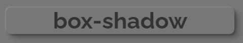
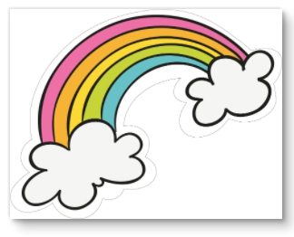
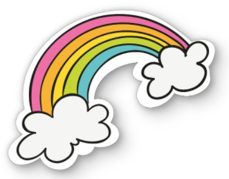

說明
利用 CSS 產生陰影效果的呈現方式有以下 2種，
box-shadow 是 CSS 對 HTML 的標籤做效果的屬性，因為標籤是矩形，所以內容不論是文字或是包含透明背景的圖片，呈現的效果都是矩形的陰影。
drop-shadow() 是 filter 屬性的一種濾鏡渲染效果。
filter 的效果可作出類似 photoshop 的亮化、暗化、負片… 的 11 種濾鏡效果。
濾鏡效果可參考 filter 變色特效
文字的陰影
使用 box-shadow 時，會用 標籤的外框 製作陰影，所以當外框有圓角時也會有效果。
1 | .text1 { |

使用 filter: drop-shadow() 時，會以 內容文字的外框 製作陰影，所以就不會是固定的影子效果。
1 | .text2 { |

圖片的陰影
陰影效果用在圖片也是一樣，box-shadow 也是會呈現矩形的陰影，就算圖片有包含透明的部分也一樣是矩形的陰影。

所以要讓陰影是以有顏色的形狀部分為主，而忽略透明的部分，就可以用 filter: drop-shadow
